import torch
import torch.nn as nn
import torch.nn.functional as F
from sklearn.model_selection import train_test_split
from sklearn.datasets import make_blobs
from latex import latexify
import numpy as np
import matplotlib.pyplot as plt
import matplotlib.patches as mpatches
%matplotlib inline
%config InlineBackend.figure_format = "retina"if (torch.cuda.is_available()):
device = torch.device("cuda")
else:
device = torch.device("cpu")
print(device)cpudef generate_xor_dataset(size):
centers = [[-3.5, 3.5], [-3.5, -3.5], [3.5, -3.5], [3.5, 3.5]]
X, _ = make_blobs(n_samples = size, centers = centers, n_features = 2, random_state = 13, cluster_std = 2)
X = torch.FloatTensor(X)
y = (X[:, 0] > 0) ^ (X[:, 1] > 0)
return X, y.float().view(-1, 1)Plotting the XOR Dataset
X, y = generate_xor_dataset(400)
X_train, X_test, y_train, y_test = train_test_split(X, y, test_size = 0.5, random_state = 42)
latexify(columns = 2, fig_width = 7)
plt.scatter(X_train[:, 0], X_train[:, 1], c = y_train, cmap = "viridis", s = 10, label = "Training Samples")
plt.scatter(X_test[:, 0], X_test[:, 1], c = y_test, cmap = "viridis", s = 10, label = "Test Samples", alpha = 0.5)
plt.xlabel(r"$x_1$")
plt.ylabel(r"$x_2$")
plt.title("XOR Dataset - Training and Testing Samples")
plt.legend()
plt.show()
plt.scatter(X_train[:, 0], X_train[:, 1], c = y_train, cmap = "viridis", s = 10, label = "Training Samples")
plt.xlabel(r"$x_1$")
plt.ylabel(r"$x_2$")
plt.title("XOR Dataset - Training Samples")
plt.legend()
plt.show()
plt.scatter(X_test[:, 0], X_test[:, 1], c = y_test, cmap = "viridis", s = 10, label = "Test Samples", alpha = 0.5)
plt.xlabel(r"$x_1$")
plt.ylabel(r"$x_2$")
plt.title("XOR Dataset - Testing Samples")
plt.legend()
plt.show()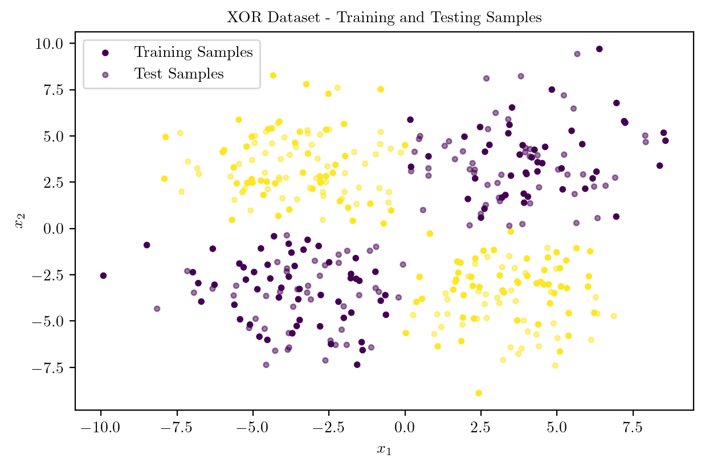
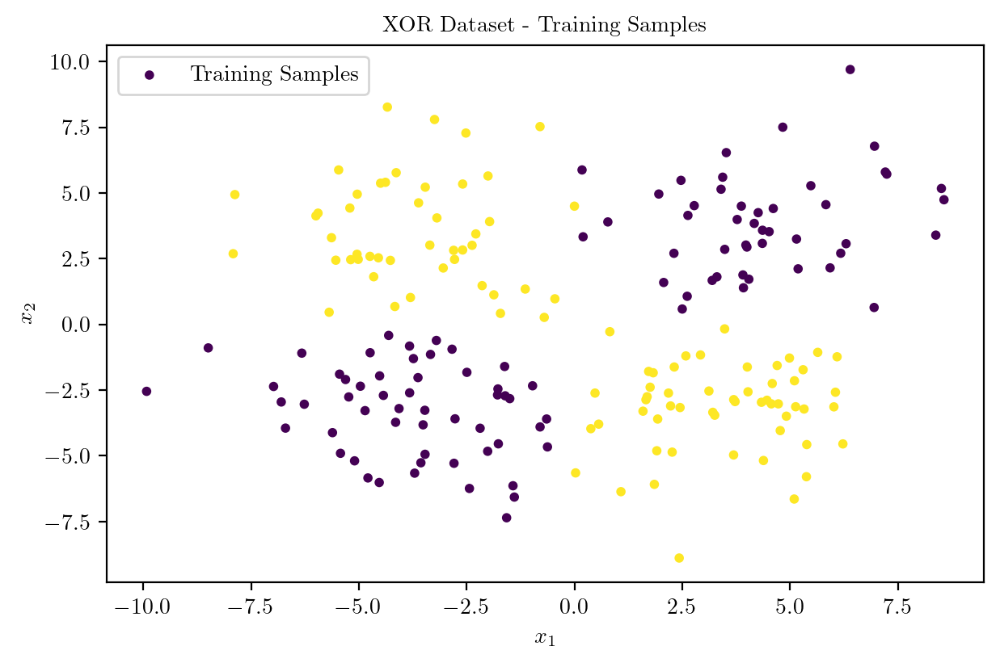
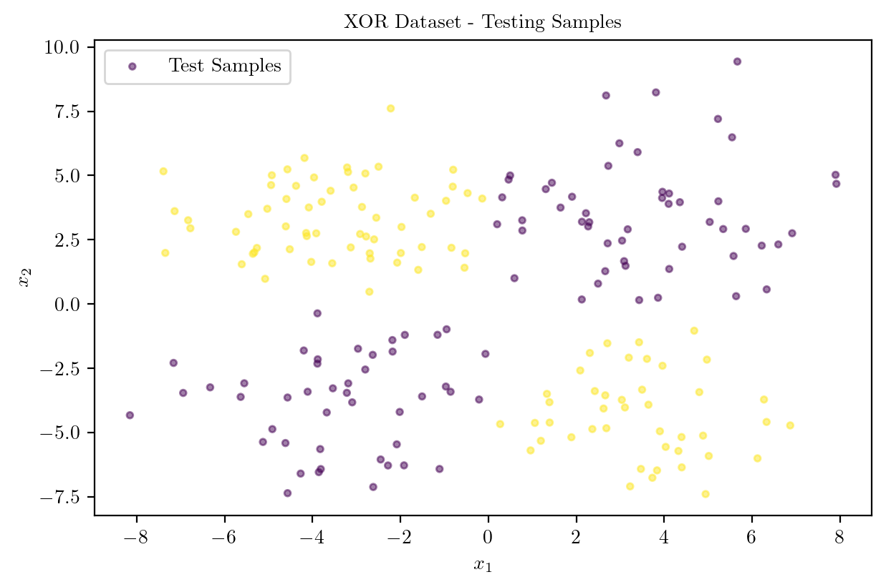
X_train.shape, X_test.shape, y_train.shape, y_test.shape(torch.Size([200, 2]),
torch.Size([200, 2]),
torch.Size([200, 1]),
torch.Size([200, 1]))X_train = X_train.to(device)
X_test = X_test.to(device)
y_train = y_train.to(device)
y_test = y_test.to(device)Model Architecture

class XORMLP(nn.Module):
def __init__(self, hidden_layer1, hidden_layer2):
super().__init__()
self.lin1 = nn.Linear(2, hidden_layer1)
self.lin2 = nn.Linear(hidden_layer1, hidden_layer2)
self.lin3 = nn.Linear(hidden_layer2, 1)
def forward(self, x):
x = torch.relu(self.lin1(x))
x = torch.relu(self.lin2(x))
logits = self.lin3(x)
return logits 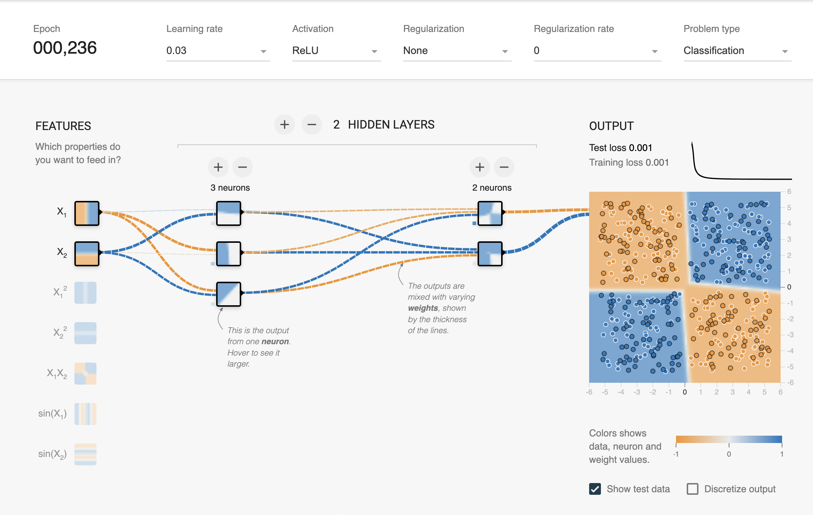
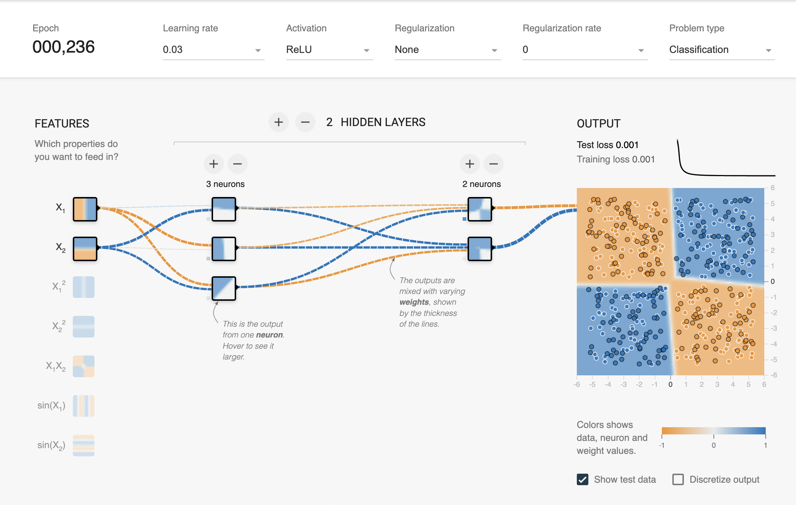Model Training with NO REGULARIZATION
\[\text{Loss Function} = \text{Binary Cross Entropy with Logits} \] \[L_N = - [y_N \cdot \log({\sigma(\hat{y}_N)}) + (1 - y_N) \cdot \log({1 - \sigma(\hat{y}_N)})]\] \[ \sigma(z) = \frac{1}{1 + e^{-z}}\]
loss_fn = nn.BCEWithLogitsLoss()
optimizer = torch.optim.Adam(model.parameters(), lr = 0.03)
train_dataset = torch.utils.data.TensorDataset(X_train, y_train)
train_loader = torch.utils.data.DataLoader(train_dataset, batch_size = 32, shuffle = True)
for epoch in range(10000):
running_loss = 0.0
correct = 0
total = 0
for inputs, labels in train_loader:
optimizer.zero_grad()
logits = model(inputs)
loss = loss_fn(logits, labels)
loss.backward()
optimizer.step()
running_loss += loss.item()
correct += ((logits > 0) == labels).sum().item()
total += labels.size(0)
epoch_loss = running_loss / len(train_loader)
accuracy = correct / total
if (epoch + 1) % 1000 == 0:
print(f"Epoch [{epoch + 1}/10000] | Loss: {epoch_loss} | Accuracy: {accuracy:.7f}")Epoch [1000/10000] | Loss: 6.0668761372133826e-05 | Accuracy: 1.0000000KeyboardInterrupt: Inference from the Model on Training Samples
model.eval()
with torch.no_grad():
logits = model(X_test)
predictions = (logits > 0).float()
accuracy = (predictions == y_test).sum().item() / y_test.size(0)
print(f"Test Accuracy: {accuracy:.7f}")Test Accuracy: 0.9800000Plotting the Decision Surface
def plot_decision_boundary(X_train, X_test, y_train, y_test, model, title):
X = torch.cat([X_train, X_test], dim = 0).cpu().numpy()
y = torch.cat([y_train, y_test], dim = 0).cpu().numpy()
x_min, x_max = X[:, 0].min() - 1, X[:, 0].max() + 1
y_min, y_max = X[:, 1].min() - 1, X[:, 1].max() + 1
xx, yy = np.meshgrid(np.arange(x_min, x_max, 0.1), np.arange(y_min, y_max, 0.1))
Z = model(torch.FloatTensor(np.c_[xx.ravel(), yy.ravel()]).to(device))
Z = (Z > 0).float().cpu().numpy().reshape(xx.shape)
plt.contourf(xx, yy, Z, cmap = plt.cm.Paired, alpha = 0.4)
plt.scatter(X_train[:, 0], X_train[:, 1], c = y_train, cmap = "viridis", s = 10)
plt.scatter(X_test[:, 0], X_test[:, 1], c = y_test, cmap = "viridis", s = 10, alpha = 0.5)
yellow_patch = mpatches.Patch(color = "yellow", label = "Class 1")
blue_patch = mpatches.Patch(color = "darkblue", label = "Class 2")
pink_patch = mpatches.Patch(color = "darksalmon", label = "Predict Class 1")
lblue_patch = mpatches.Patch(color = "lightblue", label = "Predict Class 2")
plt.legend(handles = [yellow_patch, blue_patch, pink_patch, lblue_patch], loc = "upper center", bbox_to_anchor = (0.5, 1.25), ncol = 2, fancybox = True, shadow = True)
plt.title(title)
plt.xlabel(r"$x_1$")
plt.ylabel(r"$x_2$")
plt.show()Decision Boundary before training
latexify(columns = 2, fig_width = 9)
model = XORMLP(hidden_layer1 = 3, hidden_layer2 = 2)
plot_decision_boundary(X_train, X_test, y_train, y_test, model, "XOR Dataset - Decision Boundary - Untrained MLP")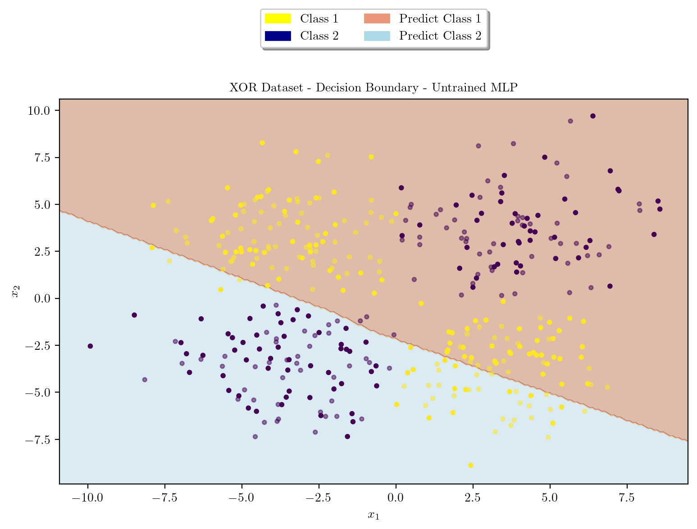
Decision Boundary After Training
latexify(columns = 2, fig_width = 9)
plot_decision_boundary(X_train, X_test, y_train, y_test, model, "XOR Dataset - Decision Boundary - MLP with No Regularization")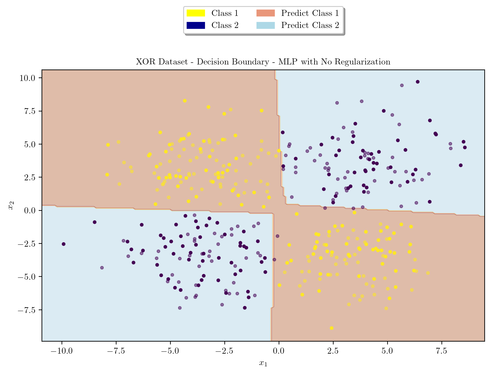
Model Architecture \(L_1\) regularization
Model Training with \(L_1\) Regularization
\[\text{Loss Function} = \text{Binary Cross Entropy with Logits} + \beta \cdot \sum_{i} ||w_i^T w_i||_1\] \[L_N = - [y_N \cdot \log({\sigma(\hat{y}_N)}) + (1 - y_N) \cdot \log({1 - \sigma(\hat{y}_N)})] + \beta \cdot \sum_{i} ||w_i^T w_i||_1\] \[ \sigma(z) = \frac{1}{1 + e^{-z}}\]
loss_fn = nn.BCEWithLogitsLoss()
optimizer = torch.optim.Adam(model.parameters(), lr = 0.03)
# L1 Regularization Penalty Coefficient
beta = 0.001
train_dataset = torch.utils.data.TensorDataset(X_train, y_train)
train_loader = torch.utils.data.DataLoader(train_dataset, batch_size = 32, shuffle = True)
for epoch in range(10000):
running_loss = 0.0
correct = 0
total = 0
for inputs, labels in train_loader:
optimizer.zero_grad()
logits = model(inputs)
loss = loss_fn(logits, labels)
l1_regularization = 0.0
for param in model.parameters():
l1_regularization += torch.norm(param, 1)
loss += beta * l1_regularization
loss.backward()
optimizer.step()
running_loss += loss.item()
correct += ((logits > 0) == labels).sum().item()
total += labels.size(0)
epoch_loss = running_loss / len(train_loader)
accuracy = correct / total
if (epoch + 1) % 1000 == 0:
print(f"Epoch [{epoch + 1}/10000] | Loss: {epoch_loss} | Accuracy: {accuracy:.7f}")Epoch [1000/10000] | Loss: 0.0748444204883916 | Accuracy: 0.9900000KeyboardInterrupt: model.eval()
with torch.no_grad():
logits = model(X_test)
predictions = (logits > 0).float()
accuracy = (predictions == y_test).sum().item() / y_test.size(0)
print(f"Test Accuracy: {accuracy:.7f}")Test Accuracy: 0.9900000latexify(columns = 2, fig_width = 9)
model = XORMLP(hidden_layer1 = 3, hidden_layer2 = 2)
plot_decision_boundary(X_train, X_test, y_train, y_test, model, "XOR Dataset - Decision Boundary - Untrained MLP")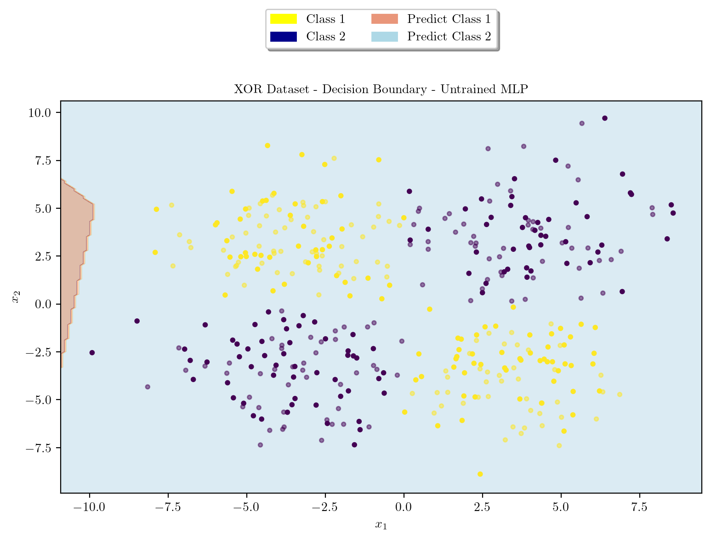
latexify(columns = 2, fig_width = 9)
plot_decision_boundary(X_train, X_test, y_train, y_test, model, r"XOR Dataset - Decision Boundary - MLP with $L_1$ Regularization")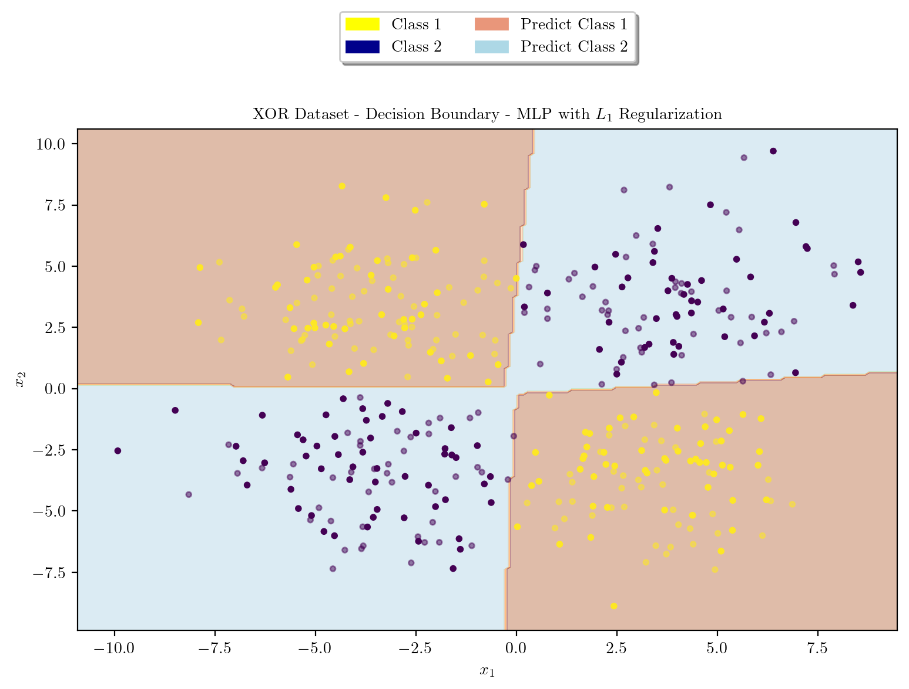
Model Architecture \(L_2\) regularization
Model Training with \(L_2\) Regularization
\[\text{Loss Function} = \text{Binary Cross Entropy with Logits} + \beta \cdot \sum_{i} ||w_i^T w_i||_2\] \[L_N = - [y_N \cdot \log({\sigma(\hat{y}_N)}) + (1 - y_N) \cdot \log({1 - \sigma(\hat{y}_N)})] + \beta \cdot \sum_{i} ||w_i^T w_i||_2\] \[ \sigma(z) = \frac{1}{1 + e^{-z}}\]
loss_fn = nn.BCEWithLogitsLoss()
optimizer = torch.optim.Adam(model.parameters(), lr = 0.03)
# L2 Regularization Penalty Coefficient
beta = 0.001
train_dataset = torch.utils.data.TensorDataset(X_train, y_train)
train_loader = torch.utils.data.DataLoader(train_dataset, batch_size = 32, shuffle = True)
for epoch in range(10000):
running_loss = 0.0
correct = 0
total = 0
for inputs, labels in train_loader:
optimizer.zero_grad()
logits = model(inputs)
loss = loss_fn(logits, labels)
l1_regularization = 0.0
for param in model.parameters():
l1_regularization += torch.norm(param, 2)
loss += beta * l1_regularization
loss.backward()
optimizer.step()
running_loss += loss.item()
correct += ((logits > 0) == labels).sum().item()
total += labels.size(0)
epoch_loss = running_loss / len(train_loader)
accuracy = correct / total
if (epoch + 1) % 1000 == 0:
print(f"Epoch [{epoch + 1}/10000] | Loss: {epoch_loss} | Accuracy: {accuracy:.7f}")Epoch [1000/10000] | Loss: 0.021696899086236954 | Accuracy: 0.9950000KeyboardInterrupt: model.eval()
with torch.no_grad():
logits = model(X_test)
predictions = (logits > 0).float()
accuracy = (predictions == y_test).sum().item() / y_test.size(0)
print(f"Test Accuracy: {accuracy:.7f}")Test Accuracy: 0.9850000latexify(columns = 2, fig_width = 9)
model = XORMLP(hidden_layer1 = 3, hidden_layer2 = 2)
plot_decision_boundary(X_train, X_test, y_train, y_test, model, "XOR Dataset - Decision Boundary - Untrained MLP")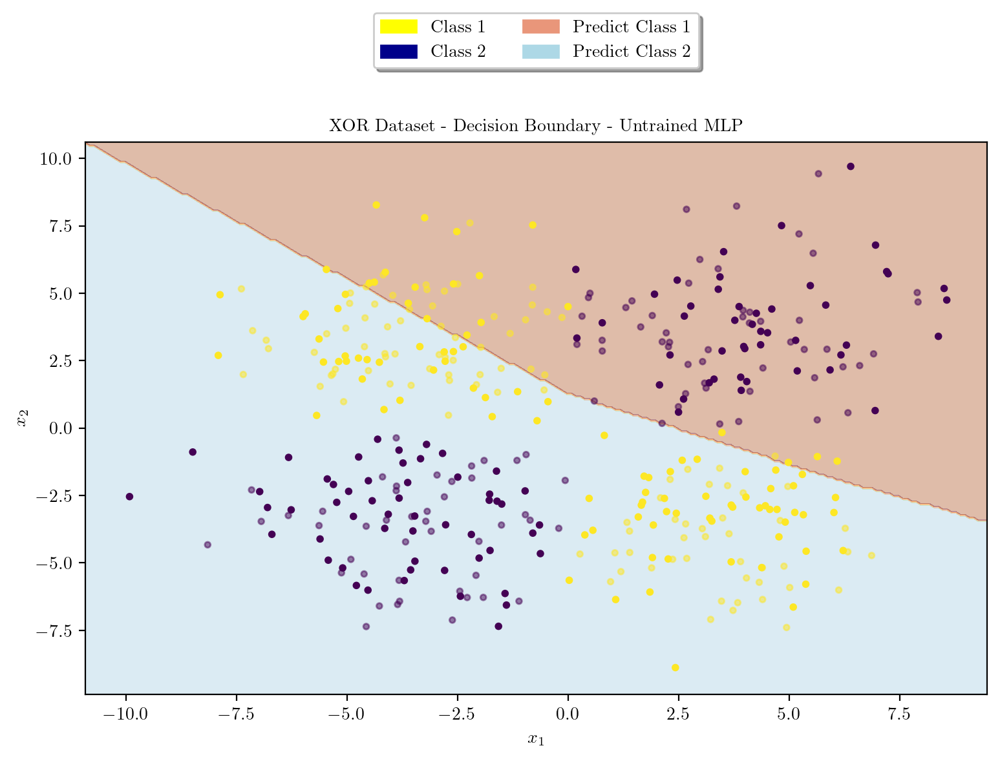
latexify(columns = 2, fig_width = 9)
plot_decision_boundary(X_train, X_test, y_train, y_test, model, r"XOR Dataset - Decision Boundary - MLP with $L_2$ Regularization")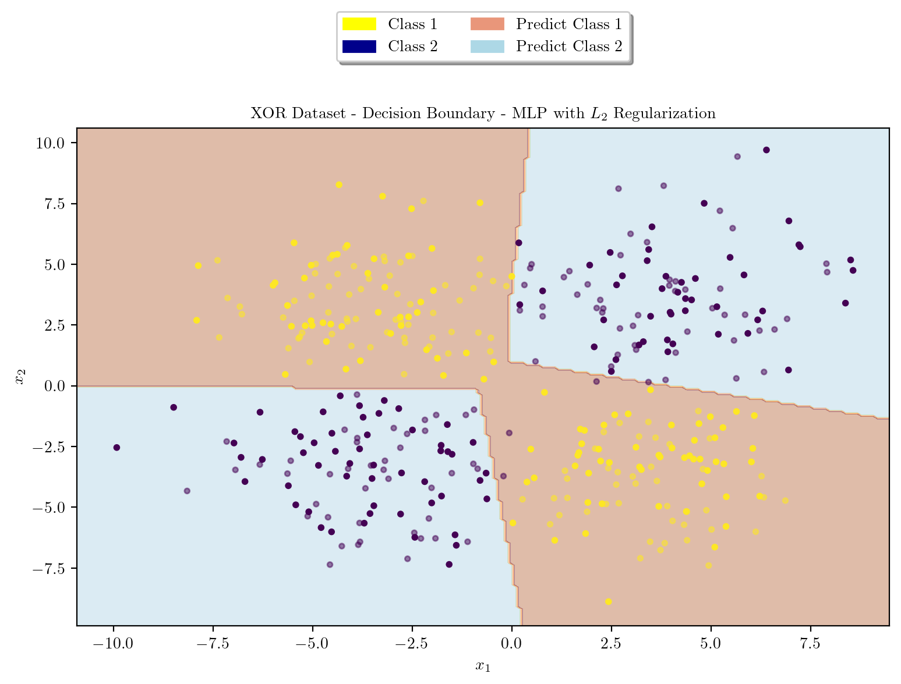
Logistic Regression using Polynomial Features \([x_1^2, x_2^2, x_1x_2]\)
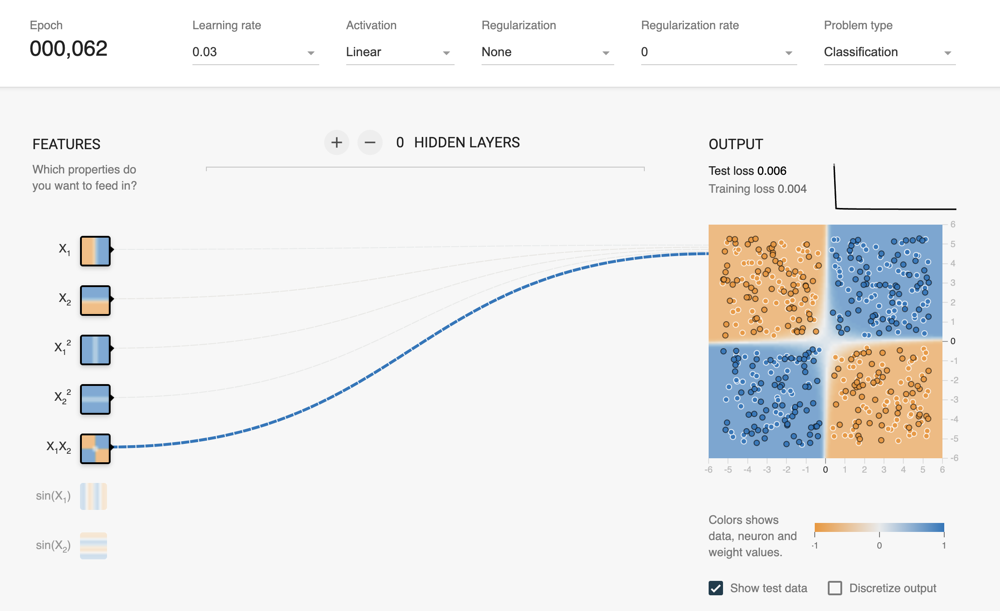
from sklearn.linear_model import LogisticRegression
from sklearn.preprocessing import PolynomialFeatures
from sklearn.metrics import accuracy_score
poly = PolynomialFeatures(degree = 2, include_bias = False)
X_train_poly = poly.fit_transform(X_train)
X_test_poly = poly.transform(X_test)
logreg = LogisticRegression()
logreg.fit(X_train_poly, y_train)
y_train_pred = logreg.predict(X_train_poly)
y_test_pred = logreg.predict(X_test_poly)
train_accuracy = accuracy_score(y_train, y_train_pred)
test_accuracy = accuracy_score(y_test, y_test_pred)
print("Train Accuracy: ", train_accuracy)
print("Test Accuracy: ", test_accuracy)Train Accuracy: 1.0
Test Accuracy: 0.98/Users/guntas13/micromamba/lib/python3.9/site-packages/sklearn/utils/validation.py:1229: DataConversionWarning: A column-vector y was passed when a 1d array was expected. Please change the shape of y to (n_samples, ), for example using ravel().
y = column_or_1d(y, warn=True)Plotting Decision Surface for Logistic Regression
def plot_decision_boundary(X_train, X_test, y_train, y_test, model, title):
X = np.concatenate([X_train, X_test], axis = 0)
y = np.concatenate([y_train, y_test], axis = 0)
x_min, x_max = X[:, 0].min() - 1, X[:, 0].max() + 1
y_min, y_max = X[:, 1].min() - 1, X[:, 1].max() + 1
xx, yy = np.meshgrid(np.arange(x_min, x_max, 0.1), np.arange(y_min, y_max, 0.1))
poly = PolynomialFeatures(degree = 2, include_bias = False)
meshgrid_poly = poly.fit_transform(np.c_[xx.ravel(), yy.ravel()])
Z = model.predict(meshgrid_poly)
Z = Z.reshape(xx.shape)
plt.contourf(xx, yy, Z, cmap = plt.cm.Paired, alpha=0.4)
plt.scatter(X_train[:, 0], X_train[:, 1], c = y_train, cmap = "viridis", s = 10)
plt.scatter(X_test[:, 0], X_test[:, 1], c = y_test, cmap = "viridis", s = 10, alpha = 0.5)
yellow_patch = mpatches.Patch(color = "yellow", label = "Class 1")
blue_patch = mpatches.Patch(color = "darkblue", label = "Class 2")
pink_patch = mpatches.Patch(color = "darksalmon", label = "Predict Class 1")
lblue_patch = mpatches.Patch(color = "lightblue", label = "Predict Class 2")
plt.legend(handles = [yellow_patch, blue_patch, pink_patch, lblue_patch], loc = "upper center", bbox_to_anchor = (0.5, 1.25), ncol = 2, fancybox = True, shadow = True)
plt.title(title)
plt.xlabel(r"$x_1$")
plt.ylabel(r"$x_2$")
plt.show()plot_decision_boundary(X_train_poly, X_test_poly, y_train, y_test, logreg, "XOR Dataset - Decision Boundary - Logistic Regression")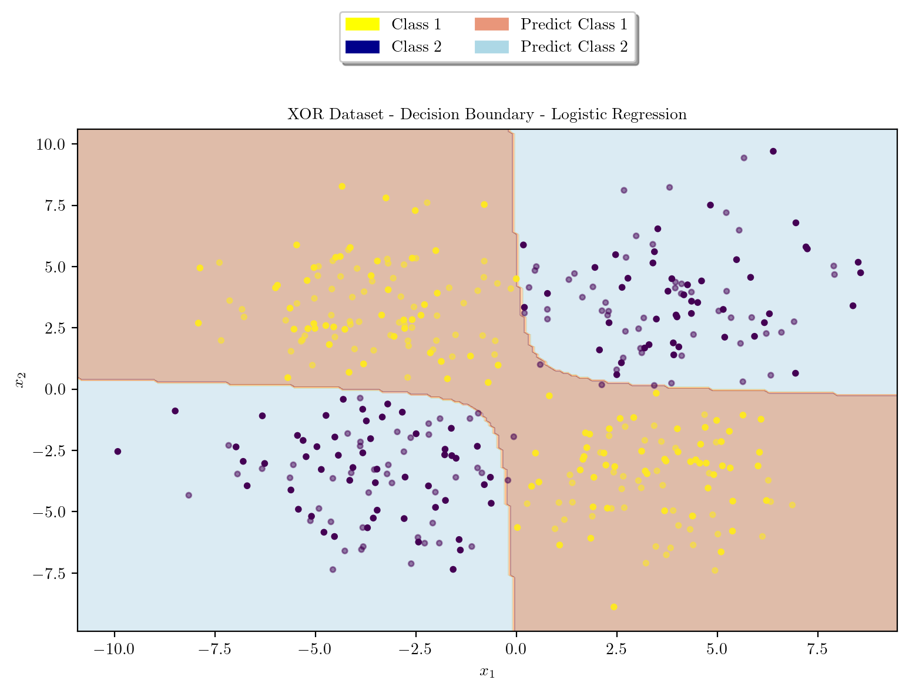